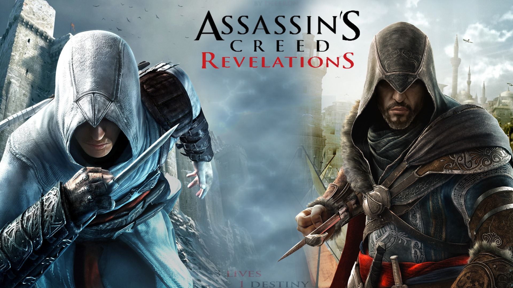

Assassin's Creed *
Um jogo Epico da Ubsoft que se tornou uma exelente franquia.
Sobre as franquias que gostei muito e zerei!
Assassin's Creed Revelations
O jogo conta com todos os três personagens principais da série até agora: Altaïr
ibn
La-Ahad,
Ezio Auditore da Firenze e Desmond Miles. O jogo se passa no ano de 1511 d.C., Ezio Auditore da
Firenze,
já em idade mais avançada, está em busca de segredos escondidos pelo seu lendário antepassado
Altaïr
em
Masyaf, antigo lar dos assassinos. Após ser surpreendido pelos Templários, Ezio viaja até a
capital
do
Império Otomano, Istanbul (Constantinopla), que está dividida em quatro distritos para encontrar
misteriosas chaves escondidas pelo explorador Nicolau Polo (pai do também explorador Marco
Polo), se
estas chaves cairem nas mãos dos Templários, poderão destruir segredos de toda a humanidade.
Assassin's Creed IV: Black Flag

Assassin's Creed IV: Black Flag segue as aventuras de Edward James Kenway, um
notável pirata
e
corsário que viveu nas Caraíbas durante a Época Dourada da Pirataria no início do século XVIII, pai
de
Haytham Kenway e avô de Ratonhnhaké:ton (Connor Kenway), os personagens jogáveis de Assassin's
Creed
III. A história de Edward começa quando este se vê acidentalmente no meio do eterno conflito entre
Assassinos e Templários. Enquanto isso os piratas mais famosos se juntaram em Nassau, Bahamas, na
tentativa de estabelecer uma das primeiras sociedades democráticas. Ao contrário dos jogos
anteriores da
série, em Black Flag o foco do jogo é mais dirigido à exploração naval no mapa de mundo aberto, mas
mantendo o combate e o sistema de infiltração típicos da série. Também está incluída uma componente
multijogador, apesar de só ser jogada em missões e cenários em-terra.
Assassin's Creed Origins

história de Assassin's Creed Origins ocorre durante o Reino Ptolemaico, no
período em que
Cleópatra ascende ao trono em 49 a.C., e centra-se em Bayek, o último dos medjai, depois deste ter
partido da sua terra natal, a vila de Siwa, em perseguição de um mistério. A sua aventura irá
levá-lo a
atravessar o Antigo Egito durante um período de revolta generalizada: o Faraó, Ptolomeu XIII, luta
para
manter seu governo enquanto abriga as ambições de expandir seu reino; sua irmã, a recém-deposta
Cleópatra, começa a mobilizar forças leais para lançar um contra-golpe contra Ptolomeu; e freqüentes
incursões no Reino pela República Romana, sob o comando de Júlio César, levam a temores de uma
invasão
iminente. O papel de Bayek como Medjay coloca ele e sua esposa Aya em contato com as forças secretas
que
manipulam esses eventos e se tornam os primeiros Assassinos. A história conta a origem entre a luta
dos Assassinos, que lutam pela paz promovendo a liberdade, e a Ordem dos Anciãos — percursores dos
Templários — que desejam a paz impondo a ordem.
Assassin's Creed: A ordem cronológica da série completa
- Assassin's Creed Odyssey (431 – 404 AC)
- Assassin's Creed Origins (49 – 43 AC)
- Assassin's Creed Valhalla (873 DC)
- Assassin's Creed (1191 DC)
- Assassin's Creed II (1476 – 1499 DC)
- Assassin's Creed: Brotherhood (1500 – 1507 DC)
- Assassin's Creed: Revelations (1511 DC)
- Assassin's Creed IV: Black Flag (1712 – 1722 DC)
- Assassin's Creed: Rogue (1756 – 1763 DC)
- Assassin's Creed III (1754 – 1783 DC)
- Assassin's Creed III: Liberation (1765 – 1780 DC)
- Assassin's Creed Unity (1776 – 1800 DC)
- Assassin's Creed Syndicate (1868 DC)
- Assassin's Creed Mirage - Em Lançamento